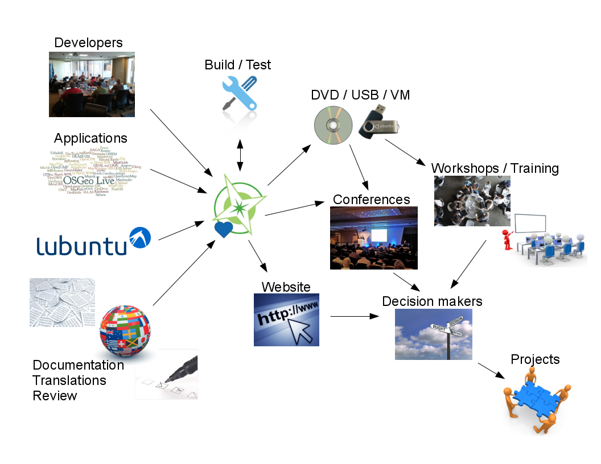
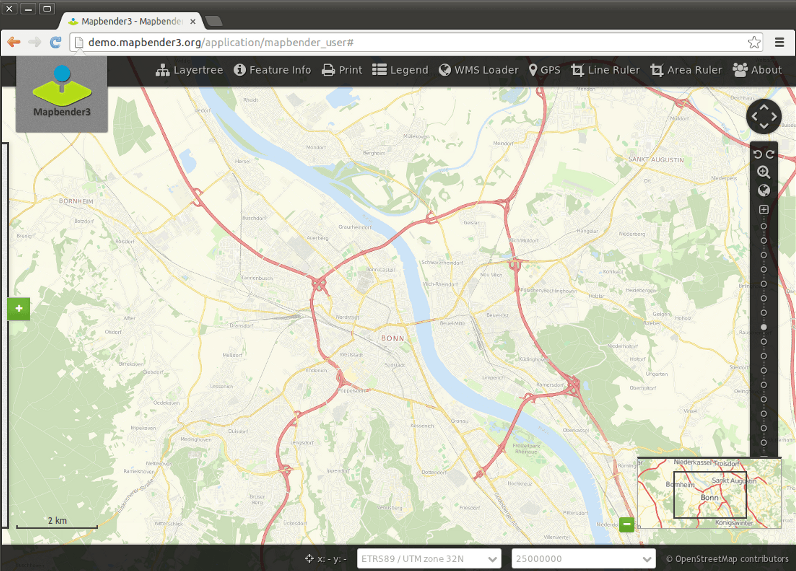
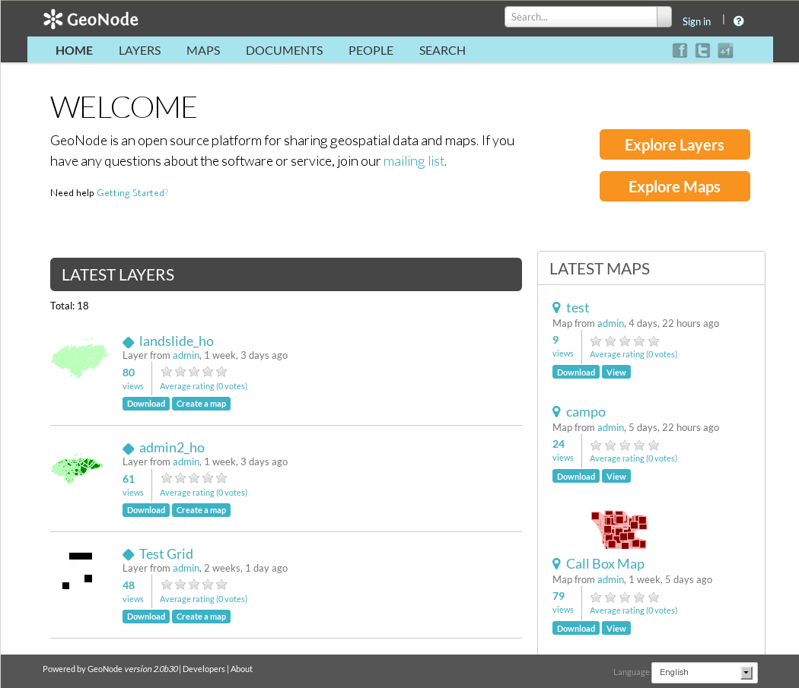
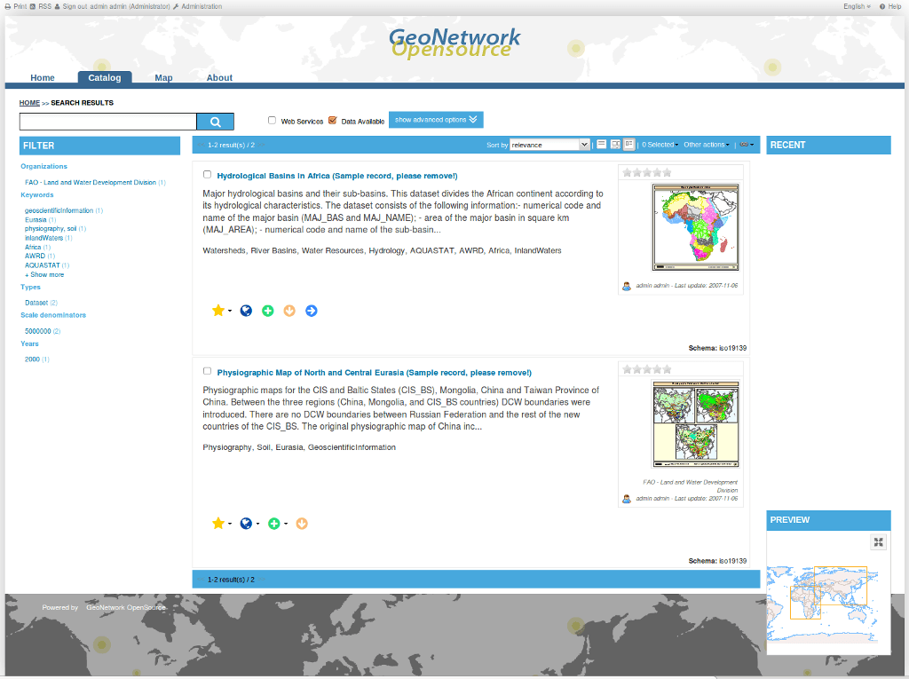
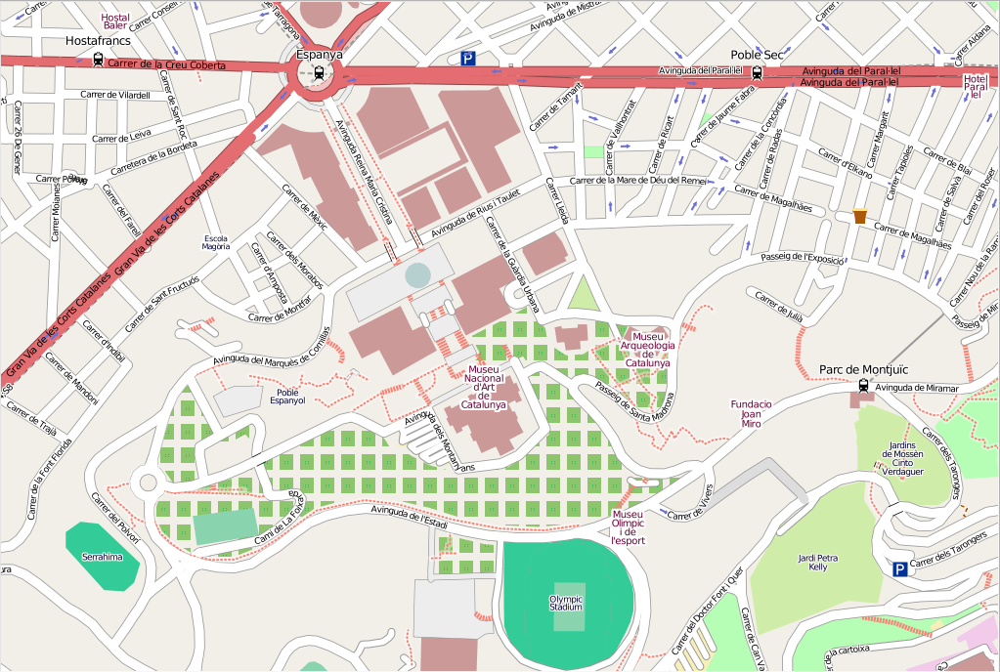

OSGeo-Live
Open Source Geospatial GNU/Linux Distribution

Folien von: Angelos Tzotsos @tzotsos. Präsentiert von Astrid Emde
Press "s" for slide notes, ESC to zoom out, SPACE / arrow keys to navigate.
Was ist OSGeo-Live?

- 50+ Open Source Anwendungen aus dem GIS Bereich
- Beispiel-Datensätze
- Übersicht- & Quickstart-Dokumente
- Übersetzungen
DVD / USB / Virtuelle Maschine
Qualitätskriterien
- Etablierte, stabile und lauffähige Software
- Aktive Community
- http://live.osgeo.org/en/metrics.html
Produktions & Marketingprozess
Neu in Version 9.0?
- Code nun in git
- 64bit Version
Open Source Geospatial
Foundation (OSGeo)
Seit 2006 ein Non-Profit Dachverband für
- Freie und Open Source Software aus dem GIS Bereich
- Bildung
- Open Data


OGC Standards
- Interoperabilität
- Zukunftssicherheit
- Return on Investment
Desktop GIS
Anzeige, Bearbeitung und Analyse per Desktop
| QGIS |
GRASS GIS |
gvSIG |
uDig |
| Kosmo |
OpenJUMP |
SAGA |
QGIS - Desktop GIS

GRASS GIS

gvSIG - Desktop GIS

uDig: anwenderfreundliches Desktop Internet GIS

OpenJUMP GIS

Kosmo - Desktop GIS

SAGA - Desktop GIS

WebGIS
Anzeige, Bearbeitung, Analyse von Geodaten über den Browser
| OpenLayers |
Leaflet |
Cesium |
Geomajas |
| Mapbender |
GeoMOOSE |
Cartaro |
GeoNode |
OpenLayers - Browser Mapping Library

Leaflet - Mobile Friendly
Interactive Maps

Cesium - 3D globes and 2D maps in a browser
Geomajas - Browser GIS Client

Mapbender - Geoportal
Framework

GeoMoose - Web GIS Portal

Cartaro - Geospatial CMS

GeoNode - Geospatial CMS

Web Services
Veröffentlichen von räumlichen Daten im Netz
| GeoServer |
MapServer |
deegree |
ncWMS |
| EOxServer |
GeoNetwork |
pycsw |
MapProxy |
| QGIS Server |
52North WPS/SOS |
TinyOWS |
Zoo Project |
GeoServer - Web Services

MapServer - Web Services

deegree - Web Services
ncWMS - Web Map Service

EOxServer - Web Coverage Service

GeoNetwork - Metadatenkatalog

pycsw - Metadatenkatalog

MapProxy - Proxy WMS & tile services

QGIS Server - Web Map Service

52°North WPS - Web
Processing Service

52°North SOS - Sensor
Observation Service

ZOO Project - Web Processing Service

Datenspeicherung
Speichern von räumlichen Daten / Datenbanken
| PostGIS |
SpatialLite |
| rasdaman |
pgRouting |
PostGIS - räumliche Datenbank

SpatiaLite - leichtgewichtige Databank

Rasdaman - Mehrdimensionale Rasterdatenbank

pgRouting - Routing für PostGIS

Navigation und Karten
| GpsDrive |
GpsPrune |
Marble |
| OpenCPN |
Open Street Map |
Viking |
GpsDrive - GPS Navigation

GpsPrune - Anzeige, Bearbeitung und
Konvertierung von GPS Tracks

Marble - Virtueller Globus

OpenCPN - Marines GPS
Chartplotter

Open Street Map Werkzeuge

Viking - GPS Navigation

Räumliche Werkzeuge
Spezielle räumliche Werkzeuge zur Analyse
| GeoKettle |
GMT |
IPython Notebook |
| Mapnik |
TileMill |
MapSlicer |
| OSSIM |
ORFEO Toollbox |
R |
GeoKettle - Extrahieren Transformieren Laden (ETL)

IPython Notebook - Mixing rich media in presentations

GMT - Generic Mapping Tools

Mapnik - Kartographisches
Rendering

TileMill - Styling & Publishing
MapSlicer - zur Erzeugung von Kacheln

OSSIM - Bildprozessierung

Orfeo Toolbox: Bildprozessierung

R - Statistische Programmierung

GIS Fachanwendungen
Anwendungen für speziellen Fragestellungen
| Sahana |
Ushahidi |
osgEarth |
| MB-System |
zyGrib |
Sahana - Disaster Management

Ushahidi - Mapping and
Timeline for events

osgEarth - 3D Terrain
Rendering

MB-System - Sea Floor
Mapping

zyGrib - Weather Forecast Maps

Daten
Räumliche Datensätze
| Natural Earth |
Open Street Map |
| North Carolina |
netCDF |
Natural Earth - Globale Datensätze

North Carolina Datensätze - zum Einsatz in der Lehre

OSM - Auzug aus OpenStreetMap
NetCDF - Zeitreihen
Temperatur und Vorhersagen
Räumliche Bibliotheken
| GDAL/OGR |
GeoTools |
GEOS |
MetaCRS Proj4 |
| libLAS |
Iris |
JTS |
GDAL/OGR - Geospatial Data Translation Tools

Java Topology Suite

GEOS - C/C++ Spatial Library

GeoTools

MetaCRS - Coordinate Reference System Transformations

libLAS - LiDAR Data Access

Iris - Meteorology and
Climatology

Andere Anwendungen
Nur über Installationsskripte
| MapWindow |
MapGuide Open Source |
MapGuide - Web Services

MapGuide Open Source is a web-based platform that enables users to develop and deploy web mapping applications and geospatial web services.
MapWindow - Microsoft
Windows based Desktop GIS

Wie kann ich mich beteiligen?
-
Werde Teil des Teams
- Melde Dich an der Mailing Liste an und stelle Dich vor
- Nehme an den wöchentlichen IRC Treffen (Kanal #osgeolive) teil
-
Zwei Wege zu helfen
- Verbesserung der Webseite und der Dokumentation
- Verbesserung der Live DVD
Verbesserung der OSGeo-Live
Dokumentation
- Lese die Quickstart-Dokumente Korrektur
- Gute Möglichkeit, um coole Software kennen zu lernen!
- Übersetze und aktualisiere die Dokumentation
- Lokal Chapters können sich hier gut einbringen
- Keine technische Erfahrung notwendig
Verbessere die OSGeo-Live
Distribution
- Testen und nach Bugs suchen
- Neue Software hinzufügen
- Beantworte einige Fragen
- Packe Deine Software über ein Installationsskript, deb Paket,...
- Erstelle ein Overview- und ein Quickstart-Dokument
- Weitere Informationen
- Schließe Dich dem Core Team an, um das Basis-System zu verbessern
OSGeo-Live braucht Dich!!
- Komm nach Como zum
OSGeo-Live Code Sprint auf der FOSS4G Europe 2015
und hilf dabei OSGeo-Live 9.0 noch - Übersetzen, Testen, Korrektur lesen...
Wichtige Links?
- http://live.osgeo.org
- http://wiki.osgeo.org/wiki/Live_GIS_Disc
- http://lists.osgeo.org/mailman/listinfo/live-demo
- irc://irc.freenode.net#osgeolive
Wer steckt hinter OSGeo-Live?
Entwickler und Übersetzer
| Name | Country | Osgeo_id | |
|---|---|---|---|
| Activity Workshop | mail activityworkshop net | Switzerland | activityworkshop |
| Alan Boudreault | aboudreault mapgears.com | Canada | aboudreault |
| Alex Mandel | tech wildintellect com | USA | wildintellect |
| Alexandre Dube | adube mapgears.com | Canada | adube |
| Amy Gao | amy spatialfront com | China | amygao |
| Andrea Antonello | andrea.antonello gmail com | Italy | moovida |
| Angelos Tzotsos | tzotsos gmail com | Greece | kalxas |
| Anton Patrushev | anton.patrushev gmail com | Japan | anton |
| Antonio Santiago | asantiagop gmail com | Spain | asantiago |
| Argyros Argyridis | arargyridis gmail com | Greece | arargyridis |
| Ariel Núñez | ingenieroariel gmail com | Colombia | ingenieroariel |
| Astrid Emde | astrid.emde wheregroup com | Germany | astrid_emde |
| Balasubramaniam Natarajan | bala150985 gmail com | India | bullet |
| Barry Rowlingson | b.rowlingson gmail com | UK | barryrowlingson |
| Benjamin Pross | b.pross 52north org | Germany | spross |
| Brian Hamlin | maplabs Light42 com | USA | darkblue_b |
| Bruno Binet | bruno.binet camptocamp com | France | bbinet |
| Bu Kun | bukun osgeo.cn | China | bukun |
| Cameron Shorter | Cameron.Shorter jirotech com | Australia | camerons |
| Dane Springmeyer | dane dbsgeo com | USA | springmeyer |
| Daniel Kastl | daniel.kastl georepublic de | Japan | dkastl |
| Danilo Bretschneider | bretschneider geospatialinformation org | Germany | bretschneider |
| Dimitar Misev | d.misev jacobs-university de | Germany | misev |
| Edgar Soldin | edgar.soldin web de | Germany | edso |
| Eike Hinderk Jürrens | e.h.juerrens 52north org | Germany | ehjuerrens |
| Eric Lemoine | eric.lemoine camptocamp com | France | erilem |
| Erika Pillu | erika pillu gmail com | France | erikapillu |
| Etienne Dube | etdube gmail com | Canada | etdube |
| Fabian Schindler | fabian.schindler eox at | fschindler | |
| Fran Boon | fran aidiq com | UK | flavour |
| Frank Gasdorf | fgdrf users.sourceforge.net | Germany | fgdrf |
| Frank Warmerdam | warmerdam pobox.com | USA | warmerdam |
| François Prunayre | fx prunayre gmail com | France | fxp |
| Friedjoff Trautwein | friedjoff.trautwein geops de | Germany | friedjoff |
| Gavin Treadgold | gav rediguana co nz | New Zealand | rediguana |
| Grald Fenoy | gerald.fenoy geolabs fr | France | djay |
| Guy Griffiths | guy griffiths rdg ac uk | UK | guygriffiths |
| Hamish Bowman | hamish_b yahoo com | New Zealand | hamish |
| Haruyuki Seki | hal georepublic co jp | Japan | halsk |
| Henry Addo | henry ushahidi com | Ghana | eyedol |
| Hernan Olivera | lholivera gmail com | Argentina | hernanolivera |
| Howard Butler | hobu gmail com | USA | hobu |
| Ian Edwards | ian edwards metoffice gov uk | UK | ian |
| Ian Turton | ijturton gmail com | UK | ianturton |
| Jackie Ng | jumpinjackie gmail com | Australia | jng |
| Jan Drewnak | j.drewnak 52north com | Germany | drewnak |
| Jane Lewis | j p lewis rdg ac uk | ? | |
| Javier Rodrigo | jrodrigo scolab es | Spain | jrodrigo |
| Jim Klassen | klassen.js gmail com | USA | jimk |
| Jinsongdi Yu | j.yu jacobs-university de | Germany | rasdaman |
| Alan Beccati | a.beccati jacobs-university de | Germany | rasdaman |
| Jody Garnett | jgarnett gmail com | Australia | jive |
| Johan Van de Wauw | johan vandewauw gmail.com | Belgium | johanvdw |
| John Bryant | johnwbryant gmail com | Australia | jbryant |
| Jorge Sanz | jsanz gvsig com | Spain | jsanz |
| José Vicente Higón | jvhigon gvsig com | Spain | jvhigon |
| Judit Mays | mays lat-lon de | Germany | jmays |
| Klokan Petr Pridal | klokan klokan cz | Switzerland | klokan |
| Kristof Lange | kristof.lange uni-muenster de | Germany | kristoflange |
| Lance McKee | lmckee opengeospatial org | USA | ? |
| Larry Shaffer | larrys dakotacarto com | USA | larrysh |
| Luca Delucchi | lucadeluge gmail com | Italy | lucadelu |
| Mage Whopper | magewhopper gmail com | Japan | Magepa |
| Marc-André Barbeau | mbarbeau mapgears com | Canada | mbarbeau |
| Manuel Grizonnet | manuel.grizonnet cnes fr | France | manuelgrizonnet |
| Margherita Di Leo | dileomargherita gmail com | Italy | madi |
| Mark Leslie | mark leslie jirotech com | Australia | mleslie |
| Massimo Di Stefano | massimodisasha yahoo it | Italy | epifanio |
| Micha Silver | micha arava co il | Israel | micha |
| Michael Owonibi | m.owonibi jacobs-university de | Germany | mowonibi |
| Michaël Michaud | michael michaud free fr | France | michaudm |
| Mike Adair | madair dmsolutions ca | Canada | madair |
| Nathaniel V. Kelso | nathaniel kelsocartography com | USA | ? |
| Ned Horning | horning amnh org | USA | nedhorning |
| Oliver Tonnhofer | olt omniscale de | Germany | olt |
| Patric Hafner | patric.hafner geops de | Germany | phaf |
| Paul Meems | p.meems topx-group nl | The Netherlands | pmeems |
| Pirmin Kalberer | pka sourcepole com | Switzerland | pka |
| Regina Obe | lr pcorp us | USA | robe |
| Ricardo Pinho | rpinho_eng yahoo com br | Portugal | rpinho |
| Roald de Wit | osgeo rdewit net | Australia | rdewit |
| Roberto Antolin | rantolin geo gmail com | Spain | rantolin |
| Ruth Schoenbuchner | ruth.schoenbuchner csgis.de | Germany | rscsgis |
| Scott Penrose | scottp dd com au | Australia | scottp |
| Sergio Baños | sbc saig es | Spain | sbcalvo |
| Sergey Popov | sergobot256 gmail com | Russia | sergobot |
| Simon Cropper | scropper botanicusaustralia com au | Australia | simoncropper |
| Simon Pigot | simon.pigot csiro au | Australia | simonp |
| Stefan A. Tzeggai | gp geopublishing org | Germany | alfonx |
| Stefan Hansen | stefan.hansen jirotech com | Australia | shansen |
| Stefan Steiniger | sstein geo uzh ch | Canada/Chile | mentaer |
| Stephan Meissl | stephan meissl name | Austria | schpidi |
| Steve Lime | sdlime gmail com | USA | sdlime |
| Takayuki Nuimura | nekogahora gmail com | Japan | nuimura |
| Thierry Badard | tbadard spatialytics com | Canada | tbadard |
| Thomas Gratier | thomas gratier gmail com | France | thomasg |
| Tom Kralidis | tomkralidis gmail com | Canada | tomkralidis |
| Trevor Wekel | trevor_wekel otxsystems com | Canada | trevorwekel |
| Matthias Streulens | matthias.streulens geomajas org | Belgium | streulma |
| Zoltan Siki | siki agt bme hu | Hungary | Siki |
| Language | i18n code | Name | Country | Osgeo_id | |
|---|---|---|---|---|---|
| Catalan | ca | Òscar Fonts | Spain | oscar.fonts gmail com | oscarfonts |
| Catalan | ca | Raf Roset | Spain | rafroset gmail com | |
| Catalan | ca | Anna Muñoz | Spain | a.munyoz.b gmail com | |
| Catalan | ca | Cristhian Pin | Spain | cpinperez gmail com | |
| Catalan | ca | Marc Torres | Spain | geoinquiet gmail com | |
| Catalan | ca | Assumpció Termens | Spain | atermens gmail com | |
| Catalan | ca | Estela Llorente | Spain | estela.llorente gmail com | |
| Catalan | ca | Roger Veciana | Spain | rveciana gmail.com | |
| German | de | Astrid Emde | Germany | astrid emde wheregroup com | astrid_emde |
| German | de | Daniel Kastl | Germany | daniel georepublic de | |
| German | de | Dominik Helle | Germany | helle omniscale de | |
| German | de | Frank Gasdorf | Germany | fgdrf users.sourceforge.net | fgdrf |
| German | de | Lars Lingner | Germany | lars lingner eu | gislars |
| German | de | Otto Dassau | Germany | dassau gbd-consult de | dassau |
| German | de | Ruth Schoenbuchner | Germany | ruth schoenbuchner csgis de | |
| German | de | Thomas Baschetti | Germany | info thomas-baschetti de | tbaschett |
| Greek | el | Angelos Tzotsos | Greece | tzotsos gmail com | kalxas |
| Greek | el | Christos Iossifidis | Greece | chiossif gmail com | chiossif |
| Greek | el | Argyros Argyridis | Greece | arargyridis gmail com | Argy7 |
| Greek | el | Aikaterini Kapsampeli | Greece | kapsamp mail ntua gr | topometal |
| Greek | el | Maria Vakalopoulou | Greece | mariavak8 hotmail com | mariavak |
| Spanish | es | Agustín Díez | Spain | adiez uv es | |
| Spanish | es | David Mateos | Spain | porquewhich hotmail com | |
| Spanish | es | Hernan Olivera | Argentina | lholivera gmail com | hernanolivera |
| Spanish | es | Javier Sánchez | Spain | jsgisdev gmail com | jsanchez |
| Spanish | es | Jesús Gómez | Spain | je_gomez terra es | |
| Spanish | es | Jorge Arévalo | Spain | jorge.arevalo deimos-space com | jorgear |
| Spanish | es | Jorge Sanz | Spain | jsanz osgeo org | jsanz |
| Spanish | es | José Antonio Canalejo | Germany | jacanalejo yahoo es | |
| Spanish | es | Mauricio Miranda | Argentina | mmiranda xoomcode com | |
| Spanish | es | Mauricio Pazos | Spain | mauricio.pazos gmail com | mpazos |
| Spanish | es | Òscar Fonts | Spain | oscar.fonts gmail com | oscarfonts |
| Spanish | es | Pedro-Juan Ferrer | Spain | pferrer osgeo org | pferrer |
| Spanish | es | Roberto Antolín | Spain | rantolin.geo gmail com | |
| Spanish | es | Samuel Mesa | Colombia | samuelmesa gmail com | |
| Spanish | es | Valenty González | Venezuela | vgonzalez gvsig com | gvalenty |
| Spanish | es | Lucía Sanjaime | Spain | llusancal gmail com | |
| Spanish | es | Andrea Yanza | Columbia | andreavyanzah gmail com | |
| Spanish | es | Diego González | Spain | iberdiego gmail com | |
| Spanish | es | Nacho Varela | Spain | nachouve gmail com | |
| Spanish | es | Mario Andino | Paraguay | armra hotmail es | |
| French | fr | Thomas Gratier | France | thomas gratier gmail com | thomasg |
| French | fr | Christophe Tufféry | France | c tuffery gmail com | ctuffery |
| French | fr | Marc-André Barbeau | Canada | mbarbeau mapgears com | mbarbeau |
| French | fr | Etienne Delay | France | etienne delay gmail com | 8449 |
| French | fr | Erika Pillu | France | erika pillu gmail com | erikapillu |
| Indonesian | id | M Iqnaul Haq Siregar | Indonesia | iqnaulhaq gmail com | iqna |
| Indonesian | id | Andry Rustanto | Indonesia | rustanto.id gmail com | andry |
| Italian | it | Alessandro Furieri | Italy | a.furieri lqt it | |
| Italian | it | Antonio Falciano | Italy | ||
| Italian | it | Diego Migliavacca | Italy | diego.migliavacca gmail com | diegom |
| Italian | it | Elena Mezzini | Italy | ||
| Italian | it | Giuseppe Calamita | Italy | ||
| Italian | it | Luca Delucchi | Italy | lucadeluge gmail com | lucadelu |
| Italian | it | Marco Puppin | Italy | puppingeo gmail com | |
| Italian | it | Marco Curreli | Italy | marcocurreli tiscali it | marcocur |
| Italian | it | Margherita Di Leo | Italy | dileomargherita gmail com | madi |
| Italian | it | Massimo Di Stefano | Italy | massimodisasha gmail com | |
| Italian | it | Matteo De Stefano | Italy | mdlux | |
| Italian | it | Pasquale Di Donato | Italy | pasquale.didonato gmail com | |
| Italian | it | Roberta Fagandini | Italy | ||
| Japanese | ja | Haruyuki Seki | Japan | hal georepublic.co jp | |
| Japanese | ja | Nobusuke Iwasaki | Japan | wata909 gmail com | |
| Japanese | ja | Toshikazu Seto | Japan | tosseto gmail com | |
| Japanese | ja | Yoichi Kayama | Japan | yoichi.kayama gmail com | |
| Japanese | ja | Takayuki Nuimura | Japan | nekogahora gmail com | nuimura |
| Japanese | ja | Hirofumi Hayashi | Japan | hayashi apptec co jp | |
| Japanese | ja | Ko Nagase | Japan | nagase georepublic co jp | sanak |
| Korean | kr | Hyeyeong Choe | Korea | hychoe ucdavis.edu | hychoe |
| Polish | pl | Milena Nowotarska | Poland | do.milenki gmail com | milenan |
| Polish | pl | Damian Wojsław | Poland | damian wojslaw pl | trochej |
| Russian | ru | Alexander Bruy | Ukraine | voltron ua.fm | Voltron |
| Russian | ru | Alexander Muriy | Russia | amuriy gmail.com | amuriy |
| Russian | ru | Alexey Ardyakov | Russia | ardjakov rambler.ru | Ariki |
| Russian | ru | Andrey Syrokomskiy | Ukraine | signmotion gmail.com | Andrey Syr |
| Russian | ru | Anton Novichikhin | Russia | novi-mail mail.ru | novia |
| Russian | ru | Daria Svidzinska | Ukraine | d.svidzinska gmail.com | darsvid |
| Russian | ru | Denis Rykov | Russia | rykovd gmail.com | Denis Rykov |
| Russian | ru | Dmitry Baryshnikov | Russia | polimax mail.ru | Bishop |
| Russian | ru | Evgeny Nikulin | Russia | nikulin.e gmail.com | yellow-sky |
| Russian | ru | Ilya Filippov | Russia | filip83pov yandex.ru | bolotoved |
| Russian | ru | Grigory Rozhentsov | Russia | grozhentsov gispro.ru | grozhentso |
| Russian | ru | Maxim Dubinin | Russia | sim gis-lab.info | Maxim Dubinin |
| Russian | ru | Nadiia Gorash | UK | Nadiia.gorash gmail.com | Nadiia |
| Russian | ru | Pavel | Russia | pashtet51 gmail.com | Pavel |
| Russian | ru | Sergey Grachev | Russia | ergo list.ru | ergo |
| Russian | ru | Vera | Russia | vera probki.net | Geo-U-Piter |
| Russian | ru | Alexander Kleshnin | Russia | a.hast mail ru | HasT |
| Russian | ru | kuzkok | Russia | kuzkok gmail.com | kuzkok |
| Chinese | zh | Bu Kun | China | bukun osgeo.cn | bukun |
| Chinese | zh | Xianfeng Song | China | song.osgeo gmail com | |
| Chinese | zh | Jing Wang | China | wangjing-2008-jing 163 com | |
| Chinese | zh | Zhengfan Lin | China | public t lin gmail com | tanner |
Kernteam: Angelos Tzotsos, Cameron Shorter, Hamish Bowman, Alex Mandel and Brian Hamlin.
Sponsoren
Jirotech |
OSGeo |
UCD ICE |
| NTUA |
DebianGIS |
okeanos |
Georepublic |